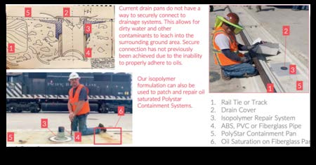

Field Applications
Rail & Utility Infrastructure
Theis Tekton-coated poles and pipe systems are deployed across rail corridors, utility grids, and infrastructure networks — outperforming standard products in every measurable category.



Field-annotated TPP installation — isopolymer repair, containment pans, and oil-saturation protection in service